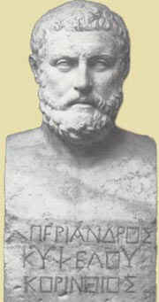

Peri/androj Periander (ca. 625-585 BC)

"kalo\n h9suxi/a""Silence/ Stillness is a good thing"
Periander succeded his father, Cypselos as dictator ofPeriander succeded his father, Cypselos as dictator of Corinth. Periander is not remembered as a particularly kind man. Though he is known to have developed many freindly relations with neighboring kings, he in fact is also known to have killed his own wife and executed anyone who was thought to be in opposition of him. . He was also one of the Seven Wise Men of Greece, a group selected from particularly outstanding politicians and philosophers. During his reign of Corinth, he sponsored the arts and education, and according to Aristotle, "devised ways to keep always busy the citizens...in order to prevent them from conspiring against him."
Though this quote, "Silence is a good thing," is one that many hear frequently in their daily lives, it is not common knowledge that it does, in fact, come from Periander. There is not much known about when or in what context it was said. It is assumed to be a fragment of some speech or letter which he wrote.For more information on Periander, Corinth, and the Seven Wise Men of Greece, please visit these sites:
Periander on Perseus Periander on Bartleby Periander on Slider Mosaic of the Seven Sages of Greece History of Corinth and Periander
A. Roberts, St. Paul's School, 2003